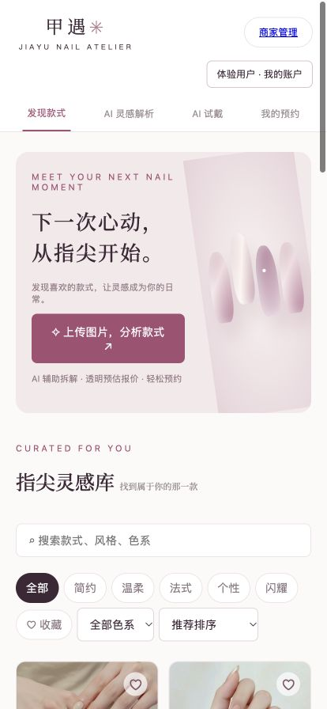

「这是什么工艺？」
消费者能表达喜欢，却不一定能描述甲型、装饰与复杂程度。
设计回应 → 结构化款式方案
01 / JIAYU · AI NAIL SERVICE
把「我想做这款」变成可沟通、可报价、可安排的美甲需求。一个连接消费者与商家的 AI 美甲服务产品。
产品定义 / 交互设计 / 界面设计 / AI 辅助开发与部署

AI 服务产品 · 可运行原型
美甲消费者 / 美甲商家
2026.10 · 持续迭代中
响应式网站 / 公开源码
01 / THE OPPORTUNITY
项目从一个具体的服务场景出发：消费者带着参考图咨询，商家需要重新确认工艺、预算、耗时与排期。问题不只在于选款，而在于图片与实际服务之间的信息断层。
消费者能表达喜欢，却不一定能描述甲型、装饰与复杂程度。
仅有一张图，难以建立对价格和耗时的共同预期。
需求、报价与预约分散，商家需要反复确认才能安排服务。
以上为产品场景假设与开发过程中的反馈归纳，尚未开展系统性用户访谈。
DESIGN PRINCIPLE
AI 负责辅助拆解和视觉预览；用户可以修改，商家确认工艺、价格与最终安排。
02 / THE SERVICE LOOP
图片、方案、报价与排期关联到同一条预约，消费者与商家围绕同一份需求协作。
选择款式 → 上传灵感 → 编辑方案 → 调整服务 → 选择美甲师与时间。
查看图与需求 → 确认报价 → 分配美甲师 → 检查时间冲突 → 更新服务状态。
03 / THE EXPERIENCE
以下为实际页面的手机尺寸截图。切换功能查看设计说明，点击图片可放大阅读。
04 / A SPACE OF YOUR OWN
个人中心集中承载预约、收藏与款式历史。昵称与头像建立身份感；深蓝夜间模式则让同一套产品拥有另一种使用氛围。
05 / ITERATION IN PRACTICE
把实际遇到的问题转化为下一轮设计与实现，而不是只停留在最初的页面方案。
分类与搜索、色系、收藏条件叠加，旧标签页的数据同步还可能覆盖补充款式。
早期流程更偏向图库选款，上传图片之后的服务衔接不够完整。
把整个生成过程放在一次长请求中，缺少断网与刷新后的恢复机制。
任务恢复与防重复提交已通过模拟测试；真实手机、不同网络及模型生成效果仍需持续实测。
06 / FROM PROTOTYPE TO PRODUCT
基础服务、工艺与装饰按价目规则累加；根据服务耗时判断同一美甲师的预约冲突。
接入火山方舟视觉模型与 Seedream。密钥存于服务端，AI 属性可编辑，不确定内容需人工确认。
Cloudflare Workers + D1 持久化业务数据；消费者查看个人记录，商家查看待处理需求与安排。
Workflows 承载后台试戴任务；重复提交复用任务编号，断网后继续查询，避免自动重复调用生成。
07 / WHAT COMES NEXT
一个可公开访问、可持续升级的双端产品原型。支持选款、方案编辑、试戴任务、报价、预约及商家安排。
截图来自实际产品的手机尺寸预览，采用演示账号与虚构预约；方案字段用于界面演示，未将其标作真实 AI 识别结果。未提供未经验证的增长、转化率或用户规模数据。支付、短信与复杂登录仍不在当前原型范围内。
EXPLORE JIAYU
看完案例，也亲手走一遍产品流程。